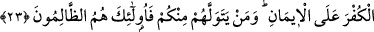

ALLAH’I, RASÛLÜ’NÜ VE CİHADI
HER ŞEYDEN ÜSTÜN TUTMAK
23. Ey iman edenler, eğer küfrü imana tercih ediyorlarsa babalarınızı ve
kardeşlerinizi dostlar edinmeyin. Sizden kim onları dost edinirse işte zalimler
onlardır.
24. De ki: “Eğer babalarınız, oğullarınız, kardeşleriniz, eşleriniz, hısım
akrabanız, kazandığınız mallar, kesada uğramasından korktuğunuz ticaret,
hoşlandığınız meskenler size Allah’tan, Rasûlü’nden ve O’nun yolunda cihâd
etmekten daha sevgili ise artık Allah emrini getirinceye kadar bekleyin. Allah,
fâsıklar topluluğunu hidâyete erdirmez.”
Âyetin nüzûl sebebi şudur: Rasûlullah (s.a.), ashâbına Medine’ye hicret etmelerini
emredince sahabilerden bazılarının hanımı, çocuğu ve akrabaları ona sarılıyor ve
“Allah aşkına ne olur gidip de bizi kimsesiz bırakma, yoksa mahvoluruz.” diyorlar, o
sahabî de onlara acıyor ve hicret etmekten vazgeçiyordu. Bunun üzerine Allah Teâlâ
şöyle buyurdu:
“Ey iman edenler, eğer küfrü imana tercih ediyorlarsa”, yani üstün tutuyorlarsa
Mekke’deki kâfir “babalarınızı ve kardeşlerinizi dostlar edinmeyin. Sizden kim onları
dost edinirse” yâni onların bu davranışını beğenirse “işte zâlimler onlardır.” Onlar
dost edinilerek dostluk hak ettiği yerden başkasına konulmuş olur. Başkalarının zulmü
onların zulmünün yanında sanki zulüm değildir.
İmam (Fahreddîn Râzî) demiştir ki: “Doğru olan, bu sûrenin Mekke’nin fethinden
sonra inmiş olmasıdır. Bu âyeti, hicret etmenin vacib olduğu mânâsına hamletmek nasıl
mümkün olabilir? Halbuki hicret, Mekke’nin fethinden önce vâcibdi. Bu husustaki en
isabetli görüş, bu âyeti müminlerin müşrik akrabalardan uzak durmalarının ve onlarla
olan dostluklarını terk etmelerinin vâcib olduğu mânâsına hamletmektir. Yani müminler
sırlarını onlara ifşa etmek ve onların arasında ikamet etmeyi İslâm yurduna hicrete